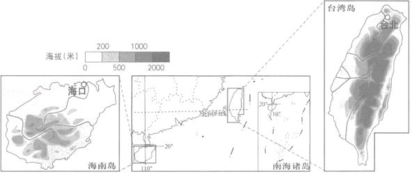
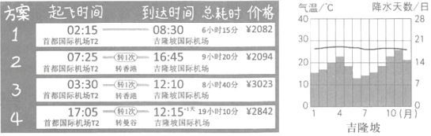

2019年北京市中考地理真题 · 选择题 第21、22、23、24、25题
为了更好地进行海峡两岸农业合作交流，海南省搭建了琼台基地等交流平台。如图为海南岛和台湾岛的位置及地形图。读图，完成第21﹣23题。

21．与海南岛相比，台湾岛（ ）
A．离大陆近B．纬度更低C．位置偏北D．面积较小
22．琼台两地农业合作的有利自然条件是（ ）
A．地形类型单一B．水热条件相似
C．育种技术先进D．海上交通便利
23．海峡两岸交流的基础是（ ）
①文化同脉 ②民族同根 ③语言相通 ④陆地相连
A．①②③B．①②④C．①③④D．②③④
小明为准备去东南亚旅游的爷爷奶奶定制行程。如图为预定过程中查找到的航班时刻表以及马来西亚首都吉隆坡的气候资料。读图，完成第24﹣27题。

24．将爷爷奶奶的出行时间定在二月份，小明考虑的是当地（ ）
A．降水天数最少，气候凉爽
B．气温较低，避免中暑
C．降水总量较少，气候干旱
D．气温较高，可避开北京的寒冷
25．在航班选择中，小明最终选择了方案2，是因为（ ）
A．机票价格最低B．飞行时间最短
C．无需中途转机D．时间相对合理